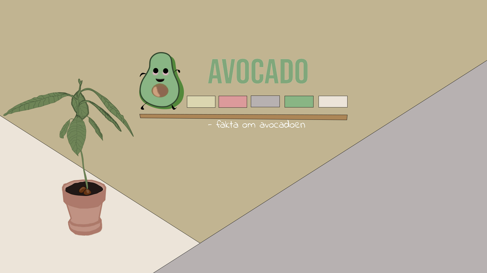

Opgaven
-
I tema 2, fik vi til opgave at producere et responsivt website. Vi
lærte, hvordan wireframes og layoutdiagrammer fungerer som
metoder, når man koder og opbygger et website. Samt tilegnede vi
os grundlæggende viden om XD, photoshop og bestemte stilarter.

Link til website:
Link
Arbejdsprocessen
-
Jeg løste opgaven ved at anvende grid og flex til at lave
layoutet. Jeg læste og forstod opbygningen af wireframes og
layoutdiagrammer, da jeg skulle implementere grid og flex
container ud fra nogen allerede givne diagrammer. Samt anvendte
media queries til at gøre mit website responsivt. Til designdelen
benyttede jeg typografier indenfor Slab Serif kategorien, og
brugte XD og photoshop til at producere et splashbillede, samt
andre billeder til mit website. Til designet af billederne,
anvendte jeg farveteori til at finde farver, som komplimenterede
min stilart.